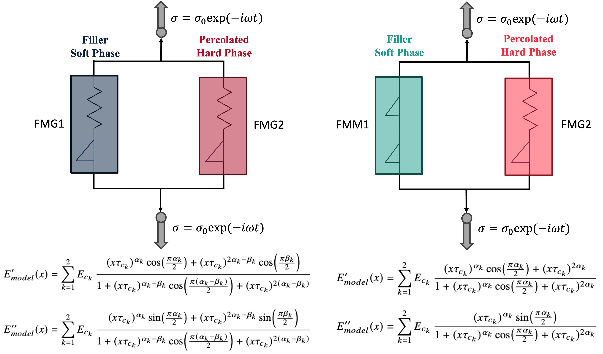

Constitutive Models
Fractional-Order Constitutive Models
PUA nanocomposites exhibit microphase separation into a soft-phase matrix and a stiffer, percolated hard phase due to strong hydrogen bonding within the hard phase. Consistent with this morphology, we use two models, each with two parallel fractional branches: FMG–FMG model has an FMG branch for each of the soft-phase matrix and percolated hard phase; FMM–FMG model has an FMM branch for the soft-phase matrix and an FMG branch for the percolated hard phase. At the relatively low nanofiller loadings considered here, no separate nanoparticle branch is introduced, and fillers are assumed to be uniformly dispersed within the two phases. The schematic of the models are provided as follows:

The resulting models use six to seven parameters: characteristic moduli \((E_{c_1}, E_{c_2})\), characteristic relaxation times \((\tau_{c_1}, \tau_{c_2})\), power exponents \((\alpha_1, \alpha_2)\), and an additional exponent \(\beta_1\) associated with the second spring-pot element in the FMM branch. The equivalent storage and loss moduli are given by
Here, \(x = a_T \omega\) is the shifted frequency.
Time Temperature Superposition
The shift factor \(a_T\) is modeled using the two-state, two-time-scale (TS2) function, which captures the time–temperature superposition behavior of neat and nanocomposite PUAs over a broad temperature range. In TS2, the glass transition is represented as a smooth transition between low- and high-temperature Arrhenius regimes:
Here, \(E_1\) and \(E_2\) are activation energies, \(\Delta S / R\) is the dimensionless transition entropy, \(T^*\) is the transition temperature, and \(T_0\) is the reference temperature, taken as \(T_g\).
Notion of Dimenssionless Number
It is worth noting that the deterministic optimization used to obtain model parameters was enforced to satisfy a physically motivated constraint that links the characteristic time-scales of the two branches (phases). This constraint is derived from a new dimensionless number (\(\mathcal{N}_P\)), introduced for each branch via the Buckingham-\(\Pi\) theorem, defined as
where for each branch, \(\rho\) denotes the mass density, \(E\) is the elastic modulus, \(L\) is the characteristic length (average distance between neighboring hard-soft interfaces), and \(\tau\) is the characteristic time. Using the velocity scale \(v\sim L/\tau\), one obtains \(\rho v^2 \sim \rho(L/\tau)^2\) as a characteristic kinetic energy density, whereas \(E\) provides the elastic energy density scale associated with strain energy. Therefore, \(\mathcal{N}_P\) can be interpreted as the ratio of kinetic to elastic energy densities for each branch. Under our lumped modeling assumption that the two phases deform and move together as a single viscoelastic body, in addition to neglecting the differences in the density between the two phases \(\rho_1 \approx \rho_2 = 1.1 \pm 0.1\) (\(\frac{g}{cm^3}\)), and similar characteristic length (\(L\approx 10-20\) (\(nm\))), we hypothesized that this dimensionless number should be identical across branches. This yields the following constraint relating the characteristic times
Another interpretation of this dimenssionless number can be found in the paper that is linked to this repository.
Ultimately, we want to determine which of the 6-7 model parameters are the most and least influential parameters impacting the model output variation, through systematic local-to-global sensitivity analysis.